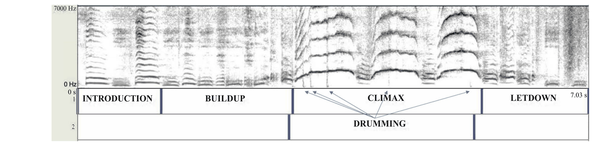
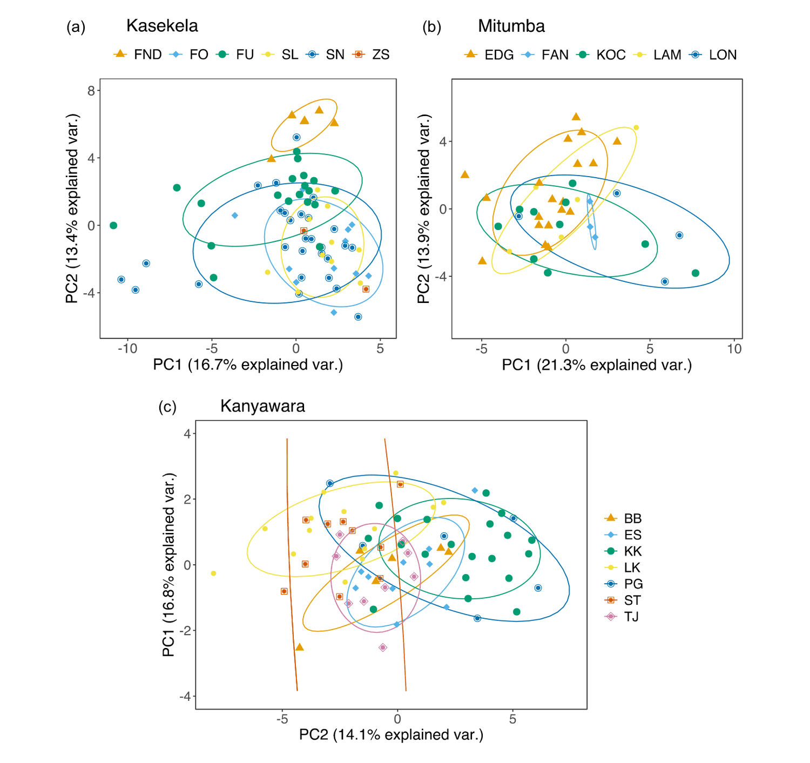

A call that carries
A male chimpanzee starts with a few low hoots. They quicken into panting, rise into screams, and sometimes end with his feet drumming on the buttress of a tree. Other chimpanzees, hundreds of meters away and out of sight, hear it. This is the pant-hoot, and my question was what they hear in it.

The reason anyone cares about chimpanzee dialects is speech. Humans learn to speak by copying the sounds around them. Songbirds, whales and parrots learn their calls in a similar way, but most primates appear to be born with theirs. If chimpanzee communities had learned dialects, some capacity for vocal learning might go back to the common ancestor of chimpanzees and humans. And a dialect would be useful to a chimpanzee. Neighboring communities are rivals, sometimes lethal ones, and a call that says “one of us” to a listener who cannot see the caller could matter.
Chimpanzees can certainly pick out a stranger by ear. In playback experiments in Kibale National Park, Uganda, my advisor played a single pant-hoot from another population through a hidden speaker (he tells the story in a blog post about our study). Parties with several males called back loudly and moved toward it; smaller parties went quiet or slipped away. What nobody knew was what the listeners were recognizing: a foreign dialect, or simply a voice they had never heard.
A claim resting on three animals
The evidence was thinner than the idea. The first study compared Gombe with Mahale, about 160 kilometers away. Those two populations are far enough apart that differences could come from genes, body size or the acoustics of the forest rather than from learning. A later analysis by the same group found that community explained 0 to 11 percent of the variation in the calls, against 17 to 52 percent for differences between individuals.
The strongest evidence came from Taï, in Côte d'Ivoire, where neighboring communities sounded more different from each other than from a distant one. That is what learning would predict: neighbors pushing their calls apart. But it rested on three males per community. Small, noisy samples do not only miss real effects. They also produce large, false ones.
A surprising result from three animals is a reason to look again, not yet a fact.
So I designed the study as a replication: two neighboring communities, where learned differences should be largest, plus one distant community for comparison.
Recording at Gombe
Gombe National Park sits on the shore of Lake Tanganyika and holds the longest-running study of wild chimpanzees. In 2016, my advisor Michael Wilson and I trained two Tanzanian field assistants, Hashim Issa Salala and Nasibu Zuberi Madumbi, to follow individual males through the day with a shotgun microphone and a recorder. For each call they noted the caller, what he was doing and who was nearby. I coordinated the work from Minnesota and returned in 2017. By December 2017 they had recorded 1,252 calls from the Kasekela and Mitumba communities.
Most of those recordings did not survive. I screened them down to 723 of good enough quality, then removed choruses in which callers overlapped and males with fewer than eight pant-hoots. That left 214 pant-hoots from 11 males. Field data also have their own plot twists. Kasekela's alpha male was overthrown in October 2016 and was never again recorded giving a pant-hoot. In Mitumba, the alpha killed another adult male in July 2017. For the distant community, Pawel Fedurek and Katie Slocombe shared 111 pant-hoots from 7 males of the Kanyawara community in Kibale National Park, Uganda.
Before analyzing anything, I wrote down how the sample could mislead me, using a checklist for sampling bias in animal studies (STRANGE):
- Who calls gets counted. High-ranking males call more, so they are more likely to reach the eight-call minimum.
- When calls get counted. Chimpanzees pant-hoot more in the morning, and possibly more when fruit is plentiful, so mornings and the wet season are probably overrepresented.
- Family resemblance. Three of the six Kasekela males were close kin: two brothers and their father. If relatives sound alike, Kasekela could look distinct for reasons that have nothing to do with learning.
Turning a call into numbers
A pant-hoot does not come with a list of measurements, so I had to decide what to measure. I measured 14 features of each call's structure by hand from its spectrogram: how many elements each phase had, how long the phases lasted, and how fast the build-up was and whether it sped up. Then I picked two single elements, the middle element of the build-up and the highest-pitched scream of the climax, and measured their pitch, tonality and noisiness with acoustic software (24 and 25 features).
Wherever I could, I matched the features used in the earlier dialect studies. If my result disagreed with theirs, I did not want the disagreement to come from measuring different things.
What to hold constant
The question sounds simple: does a chimpanzee's community shape his call? But community is tangled up with other causes. Communities are defined partly by where they live, and where they live affects the forest's acoustics and who is related to whom. Each community is also made of particular individuals, each with his own voice. Any of these could make two communities sound different without any learning at all.
I drew those assumptions as a causal diagram and asked which variables would have to be held constant for the link from community to call to be read without bias. A software package for causal diagrams (dagitty) found two sufficient sets. I had not measured genes or habitat acoustics, so the usable one was individual identity and geographical location.
Geography I handled by design: the two Gombe communities share a forest and a gene pool, so I compared them first, and then added the distant community. Individual identity needed a statistical method. Context, whether the caller was feeding or traveling, is not a confounder in the diagram, but it can add noise. I tested it first. It changed the structure of the calls but nothing else, so I analyzed structural features one context at a time.
A test that a talkative male cannot fool
The standard tool for this question is a classifier (discriminant function analysis): give it calls labeled by community and see how often it guesses the community of new calls. The trap is that every male belongs to one community. If the classifier learns to recognize Sampson's voice, it also “knows” Sampson is from Kasekela. Group differences come out inflated.
The fix is a permutation version of the test (permuted discriminant function analysis). It fits the classifier on balanced subsets of calls and scores it on the calls left out. Then it shuffles the community labels between males, keeping each male's calls together, and runs the same procedure again, 1,000 times. Recognizing voices helps on shuffled labels just as much as on real ones, so the bar to beat is not 50 percent. It is whatever the classifier scores when community is meaningless.
To keep the classifier from overfitting, I first compressed the features into principal components, keeping no more components than the smallest group had calls and no more than were needed for 90 percent of the variation. I then checked that the results held with a different rule for choosing the number of components.
The baseline is part of the claim. Beat the wrong baseline and you can prove almost anything.
What the calls carried
The two neighboring communities, where learned dialects should have been strongest, could not be told apart in any set of features. The closest call was the climax scream: 70.7 percent correct against 58.0 percent on shuffled labels, with a p-value of 0.089.
There was one exception, and I report it as it is. With all three communities included, the climax screams did separate the communities better than chance (54.0 percent against 40.8 percent, p = 0.016). But no pair of communities differed on its own, and the pair that dialect learning predicts should differ most, the neighbors, did not. A difference that shows up only between two national parks hundreds of kilometers apart is just as easily explained by genes or habitat.
Individuals were a different story. The same test could tell males apart from their call structure, their climax screams and their whole calls, among the neighbors and across all three communities. The strongest signal was the pitch of the climax scream (its average, its peak and its range) and how long the climax lasted. The build-up element alone did not identify anyone.
That signal is real but not a fingerprint. Picking the right male out of 18 from his climax scream worked about 20 percent of the time, twice the shuffled baseline: some males have very distinctive calls, others blend in. The plots below show the same pattern without a classifier.


The calls also said a little about what the caller was doing. Pant-hoots given while traveling had more build-up and let-down elements; pant-hoots given at food had more climax elements.
What it does not show
Not finding dialects is not proof that there are none. I had five to seven males per community: more than three, and enough to detect a difference as large as the one reported at Taï, but not a smaller one. Gombe could also be unusual. Neither my study nor the earlier ones controlled for age, body size, health or rank, and nobody has measured how the acoustics of each forest shape the calls. The paper says all of this, and it ends by calling for larger samples and a Bayesian reanalysis of the existing data. Since then, Bayesian modeling has become the core of my statistical work.
What the study does show is narrower and, I think, sturdier. With the controls the causal diagram called for and a baseline that cannot be beaten by recognizing voices, the evidence for community dialects disappears, and the evidence for individual voices does not.
That also offers a simpler answer to the playback puzzle. A chimpanzee who knows the voices of the males in his own community would not need a dialect to recognize a stranger. And if chimpanzees do not learn their calls the way songbirds and whales do, the rich vocal learning behind human speech probably arose in our own lineage, after it split from theirs.
Where it led
If a pant-hoot carries the caller, the next question is what it carries about him. My last dissertation chapter asks whether pant-hoots carry cues of a male's age, rank and health, using recordings from six studies at two sites across three decades, linked to Gombe's long-term records. That manuscript is in preparation.
The code and the acoustic measurements behind every test in the paper are public, so anyone can rerun the analysis or try a different one.
Code and data on GitHubPaper (open access)Michael Wilson’s blog post on the study
Published in the American Journal of Primatology (2022) as “Chimpanzee pant-hoots encode individual information more reliably than group differences.” This study is one chapter of my Ph.D. dissertation at the University of Minnesota.
With Pawel Fedurek, Katie Slocombe and Michael Wilson (advisor). Field recordings at Gombe by Hashim Issa Salala and Nasibu Zuberi Madumbi; Kanyawara recordings by Pawel Fedurek. Research at Gombe was approved by the Tanzania Wildlife Research Institute and the Tanzania Commission for Science and Technology and followed the guidelines of the Jane Goodall Institute. Funded by the University of Minnesota (Talle Faculty Research Award to M. L. Wilson), Frans Plooij and Twise Victory BV, and the grants listed in the paper.
Figures, numbers and the recording are from Desai, Fedurek, Slocombe and Wilson (2022), American Journal of Primatology 84:e23430 (Figures 1, 4 and 5, Tables 6 and 7, and Sound S1), used under the Creative Commons Attribution license. The causal diagram is redrawn from Figure 2, and the accuracy chart is drawn from Tables 6 and 7.